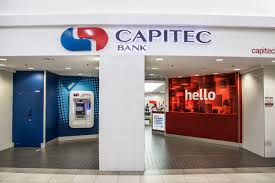

CAPITEC
According to the annual results for the 2015 financial year, the asset base of Capitec Bank was in excess of R53.9 billion, with R11.6 billion in equity, and with retail savings deposits increasing by 32 percent for the year to R19.3 billion and retail fixed savings increasing by 19 percent to R10.7 billion for the year.[5][6] Earnings and headline earnings for the 2015 financial year amounted to R2.547 billion compared to R2.017 billion in 2014, and net transaction fee income amounted to R2.6 billion.The bank offers its clients the Global One account, which is a transacting/savings account and credit facility rolled into one.[8 When it comes to customer satisfaction as per the results by South African Customer Satisfaction Index (SAcsi) in 2015, Capitec Bank comes first with 82.2 points.[9] Capitec Bank[10] has emerged as the best bank in the world by International banking advisory group Lafferty in its inaugural Bank Quality Rankings.[11] As of February 2017 "the majority, more than 5.5 million, of Capitec clients pay[ed] less than R50 per month in bank costs.
- 8h00am to 16h00pm-MONDAYS
- 8h00am to 16h00pm-TUESDAYS
- 8h00am to 16h00pm-WEDNESDAYS
- 8h00am to 16h00pm-THURSDAYS
- 8h00am to 16h00pm-FRIDAYS
- 9h00am to 12h00pm-SATURDAYS
- 9h00am to 11h00am-SUNDAYS
WHERE WILL YOU FIND THE STORE
You Will Find Capitec On The Second Floor,There's Banks Passage On The Right Hand Side.
